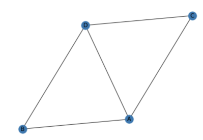
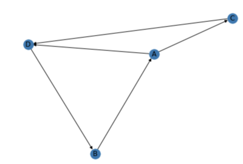
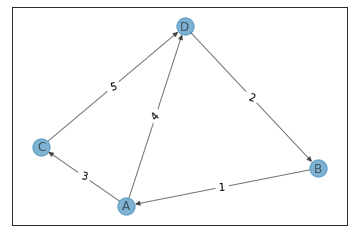

networkx
networkxはネットワーク分析に用いるpython用ライブラリ
公式ページ
インストール
pip3 install networkx
※ python3にインストールする場合
ネットワーク分析の用語
- node（頂点）
- edge（辺）
- graph（グラフ=ネットワークのこと）
- degree（頂点の持つ辺の数）
ネットワークを可視化する
import networkx as nx
G = nx.Graph()
# 頂点を追加
G.add_nodes_from(["A", "B", "C", "D"])
# 辺を追加
G.add_edges_from([("A", "C"), ("C", "D"), ("D", "B"),("B", "A"), ("A", "D")])
# グラフを描画する
nx.draw(G, with_labels = True)

ネットワークの情報を取得
print(nx.info(G))
> Graph with 4 nodes and 5 edges
グラフの詳細情報を取得できる
有向グラフを描画する
DG = nx.DiGraph()
DG.add_nodes_from(["A", "B", "C", "D"])
DG.add_edges_from([("A", "C"), ("C", "D"), ("D", "B"),("B", "A"), ("A", "D")])
nx.draw(DG, with_labels = True)
DiGraph()で有向グラフを扱うこともできる

有向グラフに重みを付与する
import networkx as nx
DG = nx.DiGraph()
DG.add_nodes_from(["A", "B", "C", "D"])
DG.add_weighted_edges_from([("A", "C", 3), ("C", "D", 5), ("D", "B", 2),("B", "A", 1), ("A", "D", 4)])
# ポジションのレイアウト設定
pos = nx.spring_layout(DG, k=0.5)
# グラフの描画
nx.draw_networkx_edge_labels(G,pos, edge_labels=edge_labels)
nx.draw_networkx(DG, pos, with_labels=True, alpha=0.5)
ノードに(頂点1, 頂点2, 重み)を渡すことで重みつき有向グラフを描画できる

最短経路を求める
print(nx.shortest_path(DG, source="A", target="D"))
> ['A', 'D']
グラフ内の最短経路を計算するためのメソッド shortest_path が用意されている
shortest_path（G, source=None, target=None, weight=None, method='dijkstra'）
オプションにて探索アルゴリズムを選択できる method='bellman-ford'
デフォルトはダイクストラ法になる